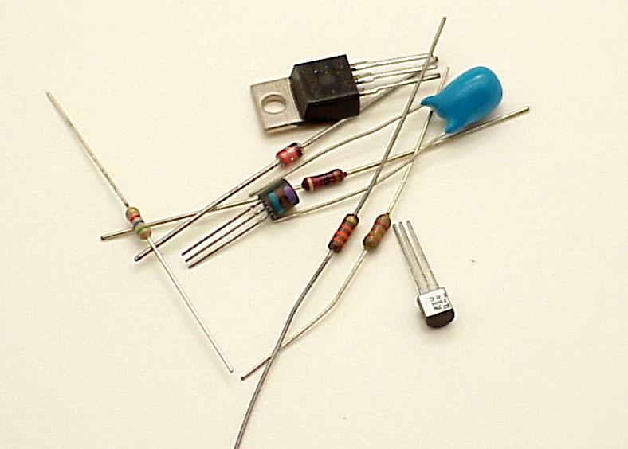
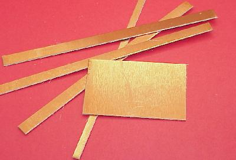
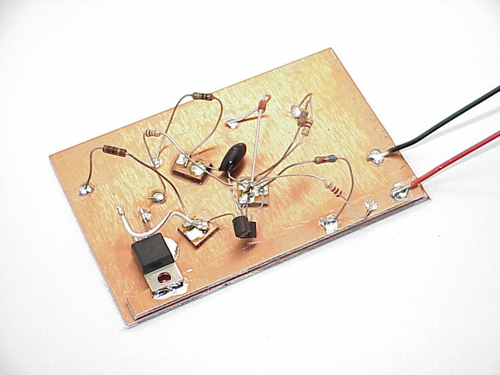

|
|
Bob's Shop Notes: |
Got an idea?A large part of my activities in the AeroElectric Connection's shops is to take a collection of components and assemble them into a circuit that addresses some task for a customer. 50 years ago it was not uncommon to assemble a test or prototype on a slab of wood. Components were attached with screws or glue and wired up. Many a frustrated cook's breadboard was purloined for the task . . . hence the colloquial phrase, "hey, let's go "breadboard this circuit and see if it works . . . ." Electronic components of today are much smaller. Here you see the parts needed to assemble the crowbar overvoltage module featured in another article elsewhere on this website. After I sketched out the circuit, I wanted to assemble it for testing on the workbench so that I knew it would work as intended. Could I "breadboard" this circuit? Sure. However . . . |
 |
|  |
Alternative base materials have come along that are much handier than wood. My personal favorite is to use pieces of the raw material from which etched circuit boards are made. The material is called "copper clad" and is available in a variety of core material and cladding thicknesses. The most common copper clad begins with a 0.062" thick fiberglas and epoxy sheet to which a thin (0.0013") layer of copper is bonded . . . usually on both sides. You can buy prepackaged pieces of this material from hobby and professional electronics suppliers. Radio Shack stocks a few small sizes. Look for an etched circuit board manufacturer in your neck of the woods. Quite often their trash bins will yield useful scraps of the stuff. You can band saw or even cut with a hefty pair of shears. By far, the most useful tool for cutting this stuff is sheet metal shear. I keep a variety of cut sizes on hand for bases along with 1/4" and 3/8" wide strips as shown in this photograph. |
|
Click here for larger image. Here's what the circuit looked like after assembly. The 1/4" wide strips of copperclad are useful for "busses". For example, some circuits may have plus and minus power supplies that are tapped various places in the circuit. You can use super-glue to stick 1/4" wide strips of copper clad down the length of your "cladboard" so that the power supplies are readily available throughout the assembly. I use a large pair of diagonal cutters to cut 3/8" wide strips of copper clad into squares. A spot of supper-glue sticks the little sqaure down to the base. The upper surface of the square becomes a junction point where several wires can be brought together by tack-soldering the wire to the copper surface. Wires that go to "ground" simply solder down to the base layer of copper. |
 |

|
Click here for larger image. Does your circuit call for switches or other controls? You can easily add a "panel" to your experimental circuit with more copper-clad. Hold the panel on edge and run a bead of solder down each side to secure it to the base. Drill as needed to mount the controls. Here's an interesting note. The techniques described here can the the foundation for FINSHED goods in addition to being handy for circuit testing. On occasion I have provided a sturdy-quick-and-dirty article of electronics to a customer by starting with a baseplate of copper clad having mounting holes for screws. An enclosure for the product is built of copper-clad pieces soldered to the base. Sides of the enclosure will usually mount some form of connector . . . D-subminiatures are my favorites. Neatness doesn't count in cladboarding so the leads of my experimental circuit are generally not shortened. For a finished goods project, leads may be trimmed much shorter. But still, neatness doesn't account for much. When the circuit is performing as desired, I fill the cavity of the enclosure with expanding insulation foam available at hardware stores and lumber yards in aerosol cans. This stuff expands a LOT . . . put just the barest covering over the components. The level of foam will rise. Put in too much an you'll have a mess. Experiment with small cardboard or plastic enclosures to see how much liquid foam is needed to just fill the cavity. When the stuff cures, I carve it flush with the top of the enclosure and solder a lid made from copper clad over the whole thing. If you want to make it look really nice, you can paint the finished project. Once the project is foamed and closed, it is quite robust mechanically in spite of the chaotic construction techniques used inside. Some folks have suggested epoxy potting as a means immobilizing the parts. Epoxy is sturdy and a good insulator BUT . . . it is heavier. Further, in spite of its apparent viscosity, the damned stuff has ruined more than one connector or poorly sealed control . . . epoxy will leak into the tiniest holes!! Finally, epoxy gets a hard grip on everything and has a large coefficient of expansion. Temperature cycles of epoxy-potted assemblies have been known to fail due to repeated termo-mechanical stressing of components - most notably glass diodes. Foam is better. You don't have to fill it to the brim, just cover the parts to make sure they don't shake loose. Fly comfortably. 'lectric Bob . . . |
 Click here to contact Bob at AeroElectric Connection Click here to contact Bob at AeroElectric Connection |
{kind=link}
{kind=link}